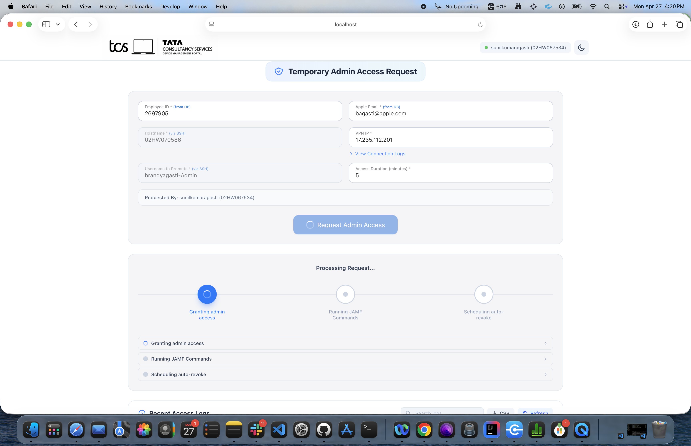
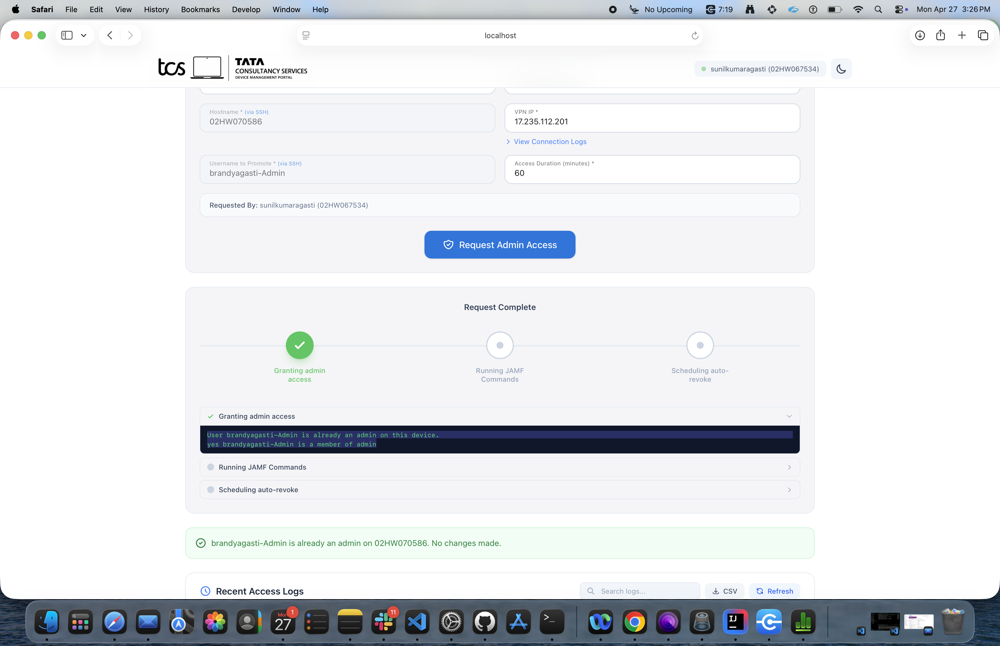
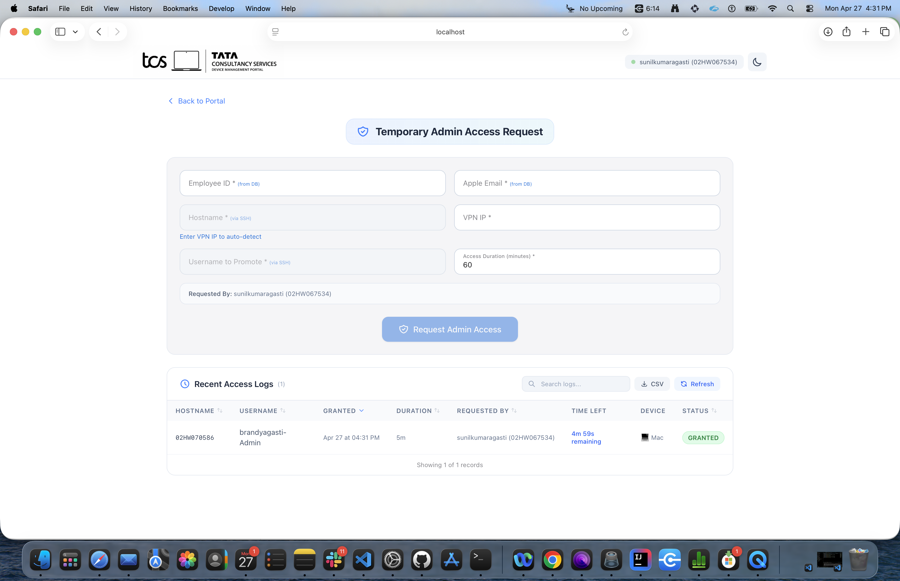
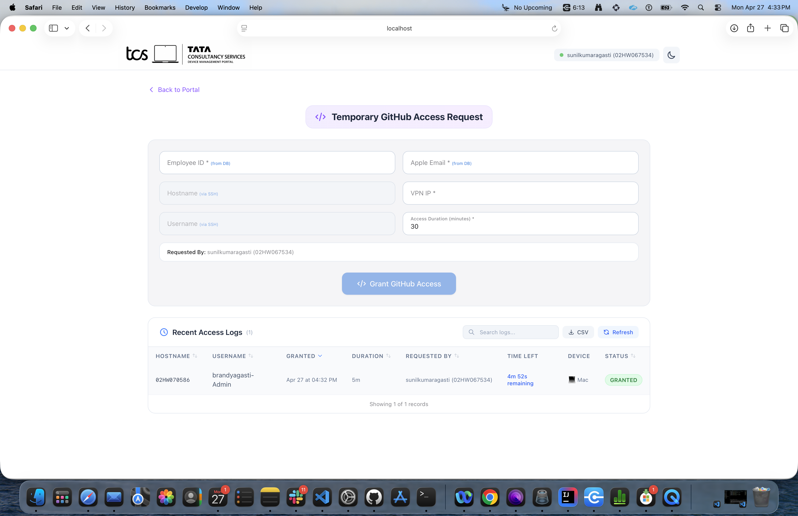
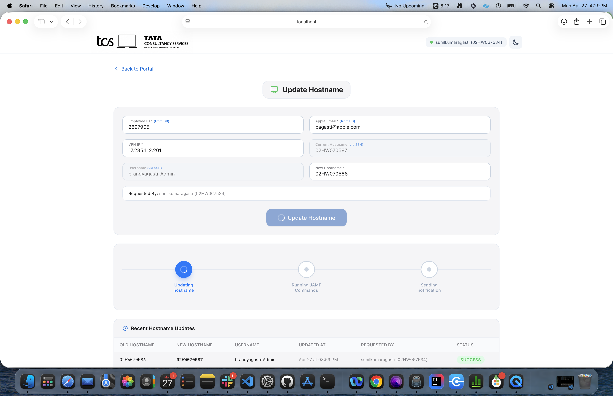
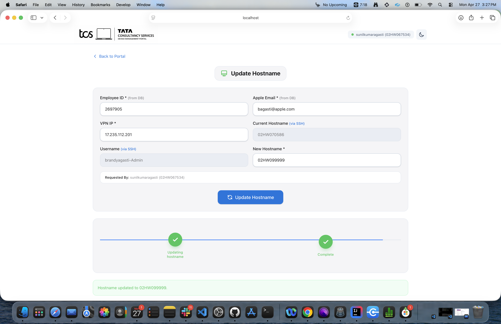
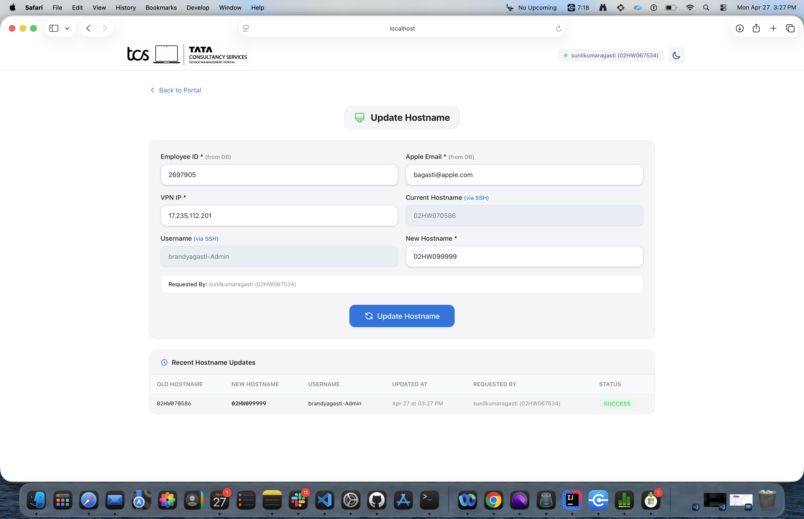
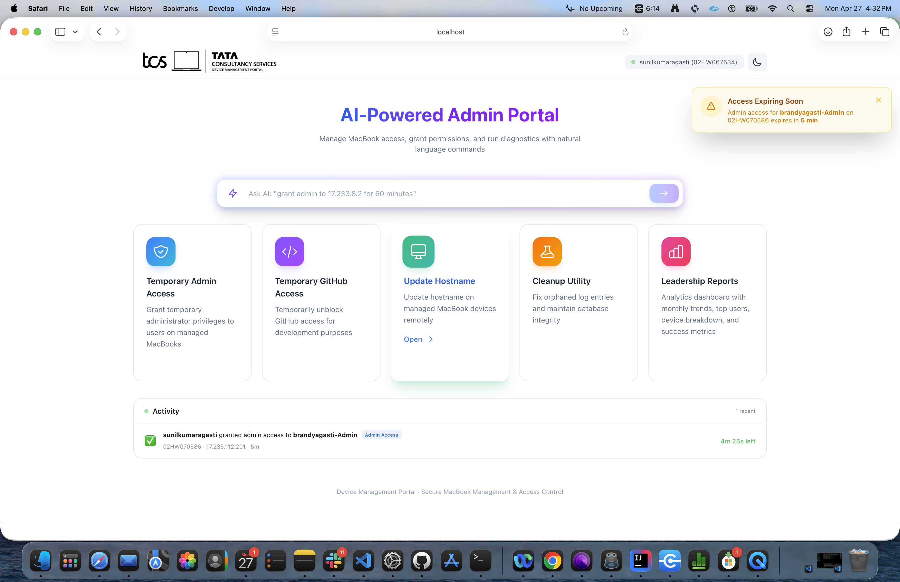

Device Management Portal — Interactive Demo
Click each tab to see real screenshots of the portal in action.
Light Mode

Dark Mode

Dashboard: The home screen shows quick-access feature cards (Admin Access, GitHub Access, Hostname Update, Cleanup, Reports) and a live activity feed showing recent grants, revokes, and access status. Supports both light and dark modes.
1Fill Form
→
2Processing
→
3Completed
→
4Access Logs
Step 1: Form

Step 2: Processing

Step 3: Completed

Step 4: Access Logs

Temporary Admin Access: Enter a VPN IP and all fields auto-populate via SSH (hostname, username, employee ID, email). The 3-step progress tracker streams live as each step completes: granting admin → running JAMF commands → scheduling auto-revoke. Access logs show status with countdown timers.
1Fill Form
→
2Access Granted
Form

Access Granted + Logs

Temporary GitHub Access: Same auto-populate flow as admin. Removes github.com from /etc/hosts, flushes DNS, and installs a persistent LaunchDaemon for auto-revoke. Access logs show granted entries with countdown timers and device type.
1In Progress
→
2Completed
→
3Logs Updated
Updating...

Completed

Recent Hostname Updates

Update Hostname: Enter VPN IP to auto-detect current hostname. Type the new hostname (validated prefix: 02HW0, 01HW0, etc). Updates HostName, ComputerName, and LocalHostName remotely via SSH. Logs show old → new hostname mapping with success status.
Cleanup Utility

Cleanup Utility: Four automated maintenance tasks — fix stuck "Granted" entries whose timers expired, detect incomplete user profiles, remove duplicate log entries, and archive logs older than 90 days. Safe to run anytime; does not affect active sessions.
Analytics Dashboard

Additional tabs available: Admin Logs, GitHub Logs, All Logs, Visitors — run node scripts/take-screenshots.js to capture these automatically.
Leadership Reports: Summary metrics (requests, users, active now, avg duration, success rate), admin vs GitHub breakdown with progress bars, monthly trend chart, top requesters, most accessed users, device breakdown, and CSV/Excel export. Sub-tabs for Admin Logs, GitHub Logs, All Logs, and Visitors tracking.
Access Expiring Alert

Activity Feed & Alerts: The dashboard shows a live activity feed with recent access grants. When access is about to expire, an "Access Expiring Soon" banner appears in the top-right corner with countdown details, ensuring admins stay informed.